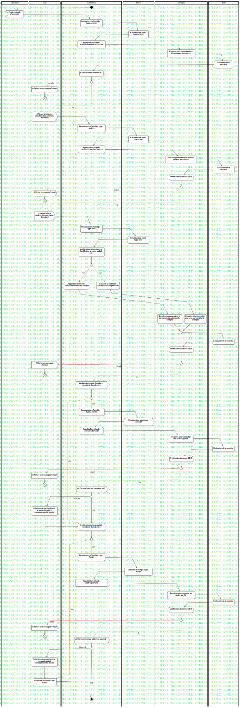

Activity1
UMLActivity
Untitled
::
Note
::
Activity Diagram
::
Activity1
Description
none
Diagrams

ActivityDiagram1
Groups
Utilisateur
Vue
Controleur
Model
Manager
BDD
Nodes
Vérification du retour BDD
MergeNode1
Appel de la méthode voirDerniereNote
Afficher un message d'erreur
Appel de la méthode voirNoteDuCompteParId
FlowFinalNode1
FlowFinalNode2
Appel de la méthode VoirDerniereNoteDuCompte
MergeNode2
Vérification qu'une Activité et enregistré dans la note
Instanciation d'un objet type Activité
Action1
Sélection de l'activité dans le menu déroulant correspondant à la note
DecisionNode4
constructeur
DecisionNode5
FlowFinalNode3
Edges
(InitialNode1→Voir les détails d'une note)
(Voir les détails d'une note→Instanciation d'un objet type activité)
(Instanciation d'un objet type activité→Création d'un objet type activité)
(Création d'un objet type activité→Appel de la méthode voirToutActiviteParCompte)
(Appel de la méthode voirToutActiviteParCompte→Requête pour consulter tout les activités du compte)
(Requête pour consulter tout les activités du compte→Exécution de la requête)
(Exécution de la requête→DecisionNode1)
catch (DecisionNode1→Afficher un message d'erreur)
(Afficher un message d'erreur→FlowFinalNode1)
try (DecisionNode1→Afficher la liste des activités dans un menu déroulant)
(Exécution de la requête→Vérification du retour BDD)
(Vérification du retour BDD→DecisionNode1)
(Afficher la liste des activités dans un menu déroulant→Instanciation d'un objet type projets)
(Instanciation d'un objet type projets→Création d'un objet type projet)
(Création d'un objet type projet→Appel de la méthode voirToutProjetParCompte)
(Appel de la méthode voirToutProjetParCompte→Requête pour consulter tout les projets du compte)
(Requête pour consulter tout les projets du compte→Execution de la requête)
(Execution de la requête→Vérification du retour BDD)
(Vérification du retour BDD→DecisionNode1)
Catch (DecisionNode1→Afficher message d'erreur)
Try (DecisionNode1→Afficher la liste projets dans un menu déroulant)
(Afficher la liste projets dans un menu déroulant→Instanciation d'un objet type note)
(Instanciation d'un objet type note→Création d'un objet type note)
(Création d'un objet type note→Vérification de la présence d'un ID dans la super global GET)
(Vérification de la présence d'un ID dans la super global GET→MergeNode1)
Non (MergeNode1→Afficher un message d'erreur)
Oui (MergeNode1→Appel de la méthode voirNoteDuCompteParId)
(Afficher message d'erreur→FlowFinalNode1)
(Afficher un message d'erreur→FlowFinalNode2)
Non (MergeNode1→Appel de la méthode VoirDerniereNoteDuCompte)
(Appel de la méthode voirNoteDuCompteParId→Requête pour consulter une note par son id et le compte)
(Appel de la méthode VoirDerniereNoteDuCompte→Requête pour consulter la derniere note créer par le compte)
(Requête pour consulter la derniere note créer par le compte→MergeNode2)
(Requête pour consulter une note par son id et le compte→MergeNode2)
(MergeNode2→Execution de la requête)
(Execution de la requête→Vérification du retour BDD)
(Vérification du retour BDD→DecisionNode2)
Catch (DecisionNode2→Afficher un message d'erreur)
Try (DecisionNode2→Vérification qu'une Activité et enregistré dans la note)
(Vérification qu'une Activité et enregistré dans la note→DecisionNode3)
(Afficher un message d'erreur→FlowFinalNode3)
(DecisionNode3→Instanciation d'un objet type Activité)
(Instanciation d'un objet type Activité→Création d'un objet type Activité)
(Création d'un objet type Activité→Appel de la méthode voirActiviteParId)
(Appel de la méthode voirActiviteParId→Requête pour consulter une activité par l'id)
(Requête pour consulter une activité par l'id→Exécution de la requête)
(Exécution de la requête→Vérifcation du retour BDD)
(Vérifcation du retour BDD→DecisionNode3)
(DecisionNode3→Sélection de l'activité dans le menu déroulant correspondant à la note)
Try (DecisionNode3→Sélection de l'activité dans le menu déroulant correspondant à la note)
Oui (DecisionNode3→Instanciation d'un objet type Activité)
Non (DecisionNode3→Vérification qu'un projet et enregistré dans la note)
(Sélection de l'activité dans le menu déroulant correspondant à la note→Vérification qu'un projet et enregistré dans la note)
Catch (DecisionNode3→Afficher un message d'erreur)
(Vérification qu'un projet et enregistré dans la note→DecisionNode3)
(DecisionNode3→Instanciation d'un objet type Projet)
(Instanciation d'un objet type Projet→Création d'un objet Type Projet)
(Création d'un objet Type Projet→Appel de la méthode voirProjetParId)
(Appel de la méthode voirProjetParId→Requête pour consulter un projet par l'id)
(Requête pour consulter un projet par l'id→Exécution de la requête)
(Exécution de la requête→Vérification du retour BDD)
(Vérification du retour BDD→DecisionNode4)
Try (DecisionNode4→vérifier que le retour bdd n'est pas null)
(Sélection du projet dans le menu déroulant correspondant à la note→Affichage du contenu de la note)
Oui (DecisionNode3→Instanciation d'un objet type Projet)
Non (DecisionNode3→Affichage du contenu de la note)
(Affichage du contenu de la note→ActivityFinalNode1)
Try (DecisionNode3→verifier que le retour n'est pas null)
(Afficher un message d'erreur→FlowFinalNode4)
(verifier que le retour n'est pas null→DecisionNode5)
Non null (DecisionNode5→Sélection de l'activité dans le menu déroulant correspondant à la note)
null (DecisionNode5→Vérification qu'un projet et enregistré dans la note)
catch (DecisionNode4→Afficher un message d'erreur)
Non null (DecisionNode6→Sélection du projet dans le menu déroulant correspondant à la note)
(vérifier que le retour bdd n'est pas null→DecisionNode6)
null (DecisionNode6→Affichage du contenu de la note)
(Afficher un message d'erreur→FlowFinalNode3)
Properties
Name
Value
name
Activity1
stereotype
null
visibility
public
isReentrant
true
isReadOnly
false
isSingleExecution
false
Owned Elements
ActivityDiagram1